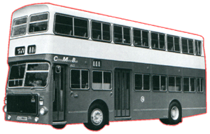

Ailsa
Volvo - B55
 |
車隊編號 Model 引擎 Engine 容積 Engine Capacity 波箱 Gearbox 車身 Body Build 體積 Volume
載客量 Passenger
服役年份 Year |
: AV (1 - 8) : Volvo TD70E (201bhp) : 7.7 liters : SCG350 5-Speed Automatic : Walter Alexander : 9862L X 2500W X 4405H(mm) [AV1] : 10160L X 2500W X 4405H(mm) [AV2 - 8] : U44 L35 S14 [AV1] : U62 L45 S21 [AV2 - 8] : 1975 - 1991 |
第一部艾莎富豪引入於1975年，車身選用亞歷山大[Walter Alexander Type V]，中巴AV1樣版車以單門設計，而引擎擁有強大馬力，因此車子被司機稱為"單門跑車"。由於此車都被大眾接受，所以中巴繼續購入7部新車，但中巴要求將車身加長，令到車子載客量增加至超過一百人，並改以雙門設計來迎合市場需要。可能由於車身材料比較易燃，此系車經常失火，甚至有幾部被當場燒死，實在令人感到惋惜。